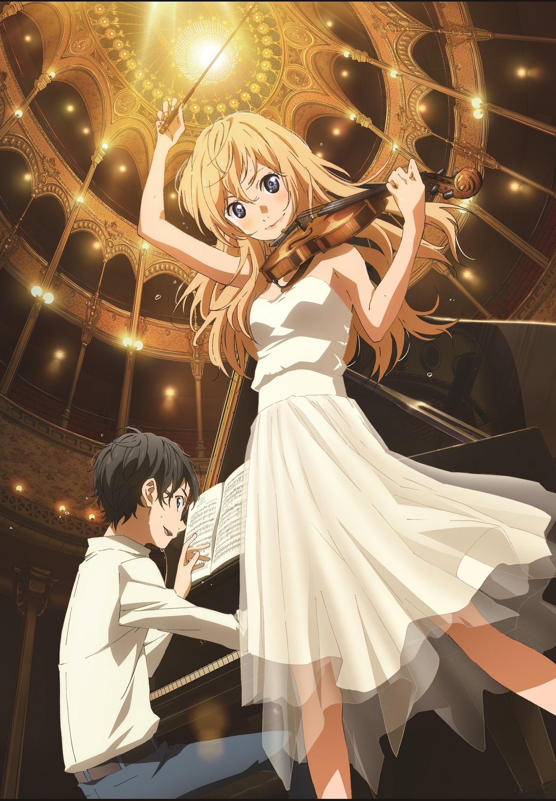

- #drama
- #romance
- #music
- #tragedy
- #slice of life
- #comedy
- #psychological
- #shounen
Shigatsu wa Kimi no Uso
| Title | |
|---|---|
| English | Your Lie in April |
| Kanji | 四月は君の嘘 |
| Romaji | Shigatsu wa kimi no uso |
| Information | |
| Type | TV |
| Episodes | 22 |
| Aired | Oct 10, 2014 to Mar 20, 2015 |
| Source | Manga |
| Duration | 22 min. per ep. |
| Rating | PG-13 - Teens 13 or older |
| Score | 8.69 |
| Ranked | #72 |
Introduction
Your Lie in April (四月は君の嘘 , Shigatsu wa Kimi no Uso?
)
is the series of both the manga and anime. The English translation of the manga was
first published on July 7, 2012. It was written by
Naoshi Arakawa and published by Kodansha.
There are currently 11 volumes in the manga series. The anime adaptation was released
on October 9, 2014. It was directed by Kyōhei Ishiguro,
written by Takao Yoshioka and the music was composed by
Masaru Yokoyama. The series aired as part of the
Autumn 2014 anime line-up and was broadcast on Thursday nights in Japan. The
adaptation was produced by A-1 Pictures and ran for 22 episodes. The series has
also received one OVA episode.
The title Shigatsu wa Kimi no Uso
has several origins.
Shigatsu
, or April
, comes from the phrase Kousei uses to describe Kaori:
She exists inside spring
, spring being used to describe and symbolize Kaori throughout the show.
The
lie
can be deduced from two things:
Kaori claiming at the beginning to like Watari, when in fact she was in love with
Kousei, and her promise let's play again together
, when in actuality she knew
she would die before she got the chance. Alternatively, it could refer to the
Kaori's claim that all musicians are scared when they go on stage, but they feign
confidence and thus performance itself is a lie:
We're all just faking it, some of us better than others, but you put your music
on the stand and play anyhow because that's the way you tell the most beautiful
lie of them all.
 Spoiler: Hover cursor on blurred text to view...
Spoiler: Hover cursor on blurred text to view...
And Then, the colors faded...
Because of music, I was given the chance to meet others.
What did you have in your heart? What did you lean on?... — I had you.
I wish time would just stand still.
Thank you for existing.